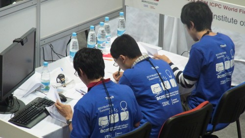
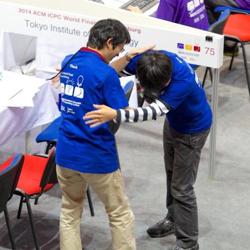
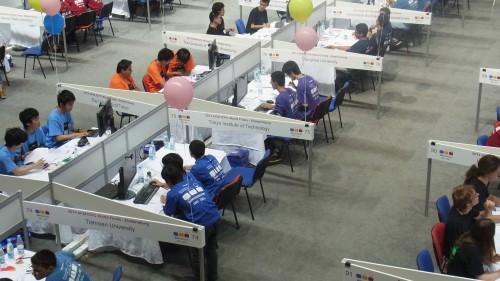
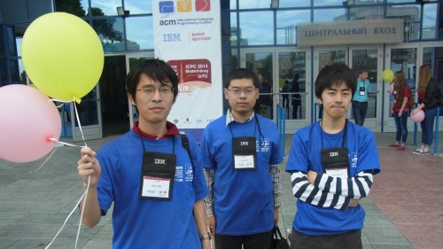

ICPC2014 World Finals
コンテスト前
Bill Poucherがいつものハイテンションで、選手にトロフィーを触らせながら記念写真を撮っている。
そうこうしているうちに9:30になったので入場開始。入場中の待ち時間で、作戦の簡単な確認（問題を読んだら概略だけ共有しておく、1時間と2時間経過時点で問題の整理を行う等）をする。
0:00
開始。
まずはPCにログインし、vimrcを書く。そしてあずにゃんの設置。

mikecatさんがAを読んでいるので、自分はBから読み始める。たくさん取ると価値の減っていくナップサック問題だけど、連続値の積分がある。なんだこれ。とりあえずDPをがんばるんじゃない？と適当な方針だけ伝えて次を読む。
次はC。多角形の角におもりをぶら下げた時、どれくらいの重さまでなら倒れずにいられるか。とこはるさんからは、これ行けるんじゃない？という感じの反応を得る。
0:15
問題をパラパラ眺めてみると、Kが整数制約のスケジューリングっぽい雰囲気が見えたので、とこはるさんに読ませて自分はEを読む。
Kを読んでいたとこはるさんが、これ夏合宿と蟻本でやったやつだ！と言う。説明を聞いたら、巡回している範囲を区間で被覆する問題で、そのまんま蟻本に載っているやつだった。問題の存在は覚えていたものの、すぐに実装できるほどではなかったので、とこはるさんにアルゴリズムを思い出してもらいつつEをまた読む。
Eはグラフの頂点をたどっていって、自分のいる頂点の次数だけが分かるとき、スタート地点として区別のできなくなる組を列挙しろという問題。探索っぽいがわからん。
mikecatさんからDの説明を聞く。25頂点くらいのグラフの上を動く問題で、Aliceが今いる頂点から出ている辺の集合を決められたパターンから選び、Bobがその中から遷移する辺を選ぶ。ある頂点から別の頂点に移動することを考え、Aliceは最善手を、Bobは最悪手を選ぶとき、最短何手で到達可能か。なんかゲーム木探索っぽいけど、状態が割と少なそうなのでメモ化探索か？と思ってちょっと考えてみる。
0:40
とこはるさんがKの解き方を作ってくれた。更に、カバーすべき範囲が比較的小さいので、座標圧縮とかバグりそうなことをせずに、範囲と同じ要素数の配列で管理すればいいんじゃねと言われたので、なるほど～と思いつつそうする。
1:00
実装が終わる。何を入れてもimpossibleが出てくる。
デバッグすると、遷移のダブリングがうまくできていないように見える。よく見ると添字のミスをしていた。
他にもいろいろ変なミスがあって、とりあえず必死で直して投げる。WA。
1:20
コードを印刷して紙デバッグしつつ、Cをmikecatさんに書いてもらう。
同じ始点の区間が来た時に、終点が遠いほうだけを選ばないといけないことを指摘される。mikecatさんに割り込んで直して投げる。WA。なんだこれは……。
1:40
謎なのでpendingしていたDを再開する。ひとつの辺集合を何回もたどる必要がないので、辺集合の個数くらいのオーダーで解けそうな気がする。
2:00
そんなことを考えていたら、Kのバグをとこはるさんが見つける。確かにバグりそうだけど、落とすようなケースもぱっと構成できない。Cも進捗が微妙っぽく、まだ1問も通してない状態だったのでとりあえず直して投げる。
AC！！！(128min, +2)とこはるさんと肩を叩いて喜びあう。この様子がロシアの大学のアカウントに写真を撮られて、Twitterにも流れていた。

2:10
とりあえずCを任せてDを考える。Bobが必ず最悪手を選ぶので、目的地しか含まない辺集合を踏ませないといけないことに気づく。その前の手ではそういう辺集合を含む頂点に必ず遷移させる必要があり……とやっていくと、幅優先っぽくグラフをたどるだけで解けそう。ナイーブに実装すると計算量が微妙だけど、結構枝が刈れるし、TLE8秒もあるから大丈夫だろーと判断する。
ちょうどCもWAが出ていて、デバッグが必要そうだったので交代して書き始める。
2:25
こんどはすんなり実装できた。まあやるだけだし。サンプルが1発で合ったので投げる。結構時間がかかり、TLEしたかと思っていたらAC(145min)。とこはるさんとハイタッチ。
この時点で周りはほとんど2完か3完で、このセット難しすぎでは……と思う。
ついでに、Iは半径D/2の円で囲めばいいんじゃないかということをとこはるさんが言ったので書いてみる。それにしては通してるチーム少なすぎるけど……。投げる。WA。投げた直後くらいに、正三角形が半径D/2より大きくなることをmikecatさんが指摘して、これマジで単なる最大クリーク問題なんじゃないのという感じになる。
他に解けそうなのがなく、mikecatさんとCのデバッグに取りかかる。
このへんから流れをあまり覚えていない。
02:??

mikecatさんのコードがそれっぽい値を出しているのに通らない。おもりの重さで二分探索できるととこはるさんが主張して、そんな気がしたので書いてみる。
サンプルはそれっぽい値が出る。が、mikecatさんが用意した微妙なケースを食わせると、区間の端点が1だけずれた値になったりする。
誤差とか桁落ちとかを疑って、いろいろ試してみるが、状況は変わらない。
03:??
EPSの値をいくつか変えて試してみるもWA。mikecatさんが書いた方のコードでもEPSを変えてみたけど相変わらずWA。
Hがグリッドグラフっぽく見えたので概要を聞いてみたりする。よくあるランダムウォークで所定の場所に到達する確率を求める問題だけど、制約が大きすぎる。行列がかなり疎なので工夫すればなんとかなるのかなぁと思いつつ、時間がなさそうなので諦め。
とこはるさんが、Gの解き方がなんとなく分かったといって説明してくれるが、あまりよくわからない。
04:??
Cが相変わらずバグっている。二分探索で対処しきれていないパターンを発見し、アドホックに修正したりして泥沼感にあふれている。
思いつくままに修正しては投げるということを繰り返すも通らず、そのまま終了。2完。

反省
Aは蟻本で見て、夏合宿でも書いたのに、1時間近くバグらせてしまった。
Cのデバッグでコンテストの半分の時間を使ってしまっていて、非常にもったいない。コードがバグってどうしようもなくなったら実装しなおすという方針自体は正しかったと思うが、結局実装しなおした方もバグっていて死んでしまった。
後から考えれば、二分探索がおかしい値を吐いた時点で、手計算で厳密解を求めるなり、Cを一旦放棄して違う問題を考え、頭を切り替えるなりすべきだったし、1時間以上同じ問題で詰まっていたら他の問題を考える、という基準も一時期運用していた（今回はすっかり忘れてしまっていた）。考えればわかるという確信のある問題があればよいが、そうでない状況で唯一分かりかけている問題を捨てるというのはかなり勇気が必要なので、こういった基準を前もって準備しておくのは役に立つのではないだろうか？
短時間コンテストでは時間をかけて考えるということが難しいので、出来る限り解ける問題のパターンを増やしておくのと、状況に応じた作戦を事前に考えておくことが重要なんだと感じた。